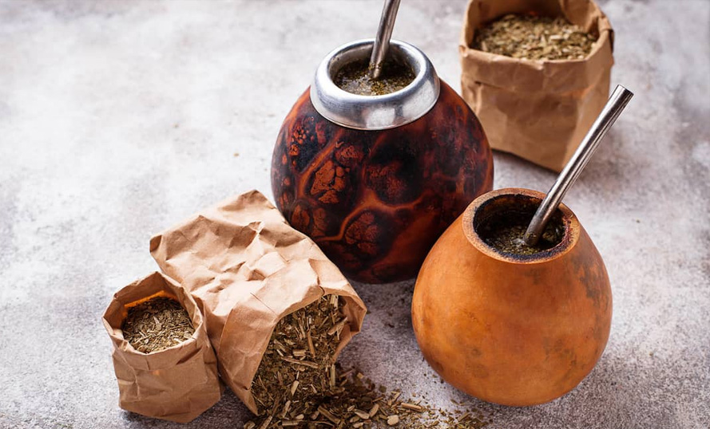

Mate artesanal de calabaza
¿Cómo se realiza?
El mate de calabaza es realizado con el fruto de la calabacera Lagenaria siceraria. Las plantas de mate son enredaderas anuales, de crecimiento estival.
Se desarrolla en suelos con pH ácido, neutro o alcalino. Su parte subterránea crece con vigor en soportes con textura arenosa. Mantener un nivel de humedad en el suelo constante teniendo en cuenta la exposición al sol, humedad ambiental, temperatura, etc.
No tolera echarcamientos, por lo que la zona de plantación debe estar bien drenada.
Se desarrolla en suelos con pH ácido, neutro o alcalino. Su parte subterránea crece con vigor en soportes con textura arenosa. Mantener un nivel de humedad en el suelo constante teniendo en cuenta la exposición al sol, humedad ambiental, temperatura, etc. No tolera echarcamientos, por lo que la zona de plantación debe estar bien drenada.
Exposición directa al sol para un buen crecimiento. El tallo puede alcanzar 9 m. y las hojas, de unos 30 cm.
No resiste heladas, necesita estar resguardada del viento. Requiere de espalderas para que su fruto pueda desarrollarse correctamente sin humedad en el suelo. Es importante plantarlas contra alambre tejido o una pared, colocándole alambres que le sirvan de guía. Son ideales para realizar glorietas en el verano por su crecimiento rápido. Su tallo posee zarcillos para poder trepar. Es resistente a plagas e insectos. Cuando los frutos maduran, cambian de color, su piel se endurece, y estará listo para su recolección.